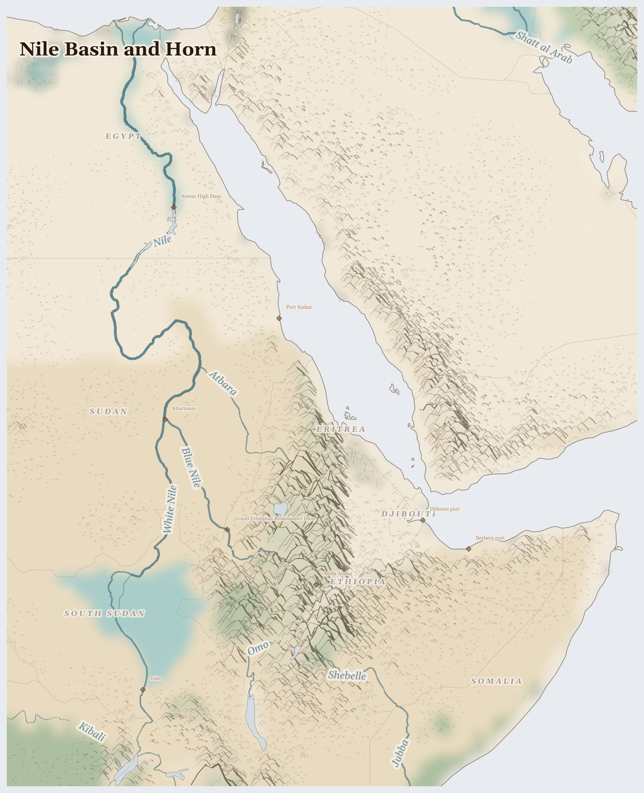

Nile Basin and Horn
Eritrea, South Sudan, Egypt and 4 more countries
Afrotropic
A great river runs through this place — the Nile. It starts in mountains where it rains and rains, and flows through deserts where it almost never rains, all the way to the sea. Eleven countries share this one river. Along its banks people grow food, herd animals, and build cities, the way they have for thousands of years.
How Life Works Here
The river is like a long green ribbon of life. Farmers use its water to grow sorghum, a grain for making flat bread called kisra. Herders walk with their cows and camels to find grass. And in dry places, special trees called acacias make a sticky gum that people collect and sell — it ends up in fizzy drinks and sweets all over the world, maybe even in your cupboard.
Dinka and Nuer pastoralists, Mursi and Bodi herders (Ethiopia lowlands).
Tenant farmers in Gezira scheme, Canal maintenance labourers in Sudan.
Rural charcoal producers (often displaced), Urban consumers (90% depend on charcoal).
What Is Happening
In Sudan, two groups of soldiers are fighting each other, and it is the ordinary families who suffer most. People have been killed, and millions have had to leave their homes and walk a long way to safer places. There is not enough food where the fighting is. But neighbours are helping neighbours: ordinary people run little clinics and share out food in places where the big aid trucks cannot go. They call themselves Emergency Response Rooms.
Something Wonderful
Every year, rain that falls on mountains in Ethiopia travels thousands of kilometres down the Nile — water that a farmer in Egypt will drink months later. One river connects a mountain village to a city by the sea. When you share water, you are part of something very old.
Let's Do Something Together
Soil in Your Hands
Go outside and pick up a handful of soil. Look closely — can you see tiny pieces of leaves, roots, or small creatures? Good soil is alive! Families who farm need good soil to grow food. When the land is tired or dry, nothing will grow and families go hungry.
- access to outdoor soil or a pot of earth
- magnifying glass (optional)
For grown-ups
Soil degradation from overgrazing, deforestation, and monoculture reduces yields year on year. In conflict zones, agricultural land is often deliberately destroyed or mined, removing it from production for years.
Let Us Pray Together
Thank you, God, for the earth. Help families whose land cannot grow food.
Leader: We pray for those who are hungry. For the tens of millions across Nile Basin and Horn who cannot meet their daily food needs.
All: Lord, hear our prayer.
Leader: We pray for the displaced. For the millions driven from their homes.
All: Lord, hear our prayer.
Leader: We pray for those living under violence. For communities enduring fighting in this region.
All: Lord, hear our prayer.
Leader: We pray for water and land. For the land itself, its rivers and aquifers stretched thin across the region.
All: Lord, hear our prayer.
O give thanks to the Lord, for he is gracious, for his steadfast love endures for ever. Let the redeemed of the Lord say this, those he redeemed from the hand of the enemy,
Collect
Lord of all power and might, the author and giver of all good things: graft in our hearts the love of your name, increase in us true religion, nourish us with all goodness, and of your great mercy keep us in the same; through Jesus Christ your Son our Lord, who is alive and reigns with you, in the unity of the Holy Spirit, one God, now and for ever.
Amen.
Talk About It
If a child from Sudan came to your school tomorrow, what would you want to ask them? What do you think they might want to ask you?
One Thing We Can Do
Look at the ingredients on a sweet or a fizzy drink. If you find "gum arabic" or "E414", it probably came from an acacia tree in Sudan. When you find it, say a little prayer for the families who live where it grew.